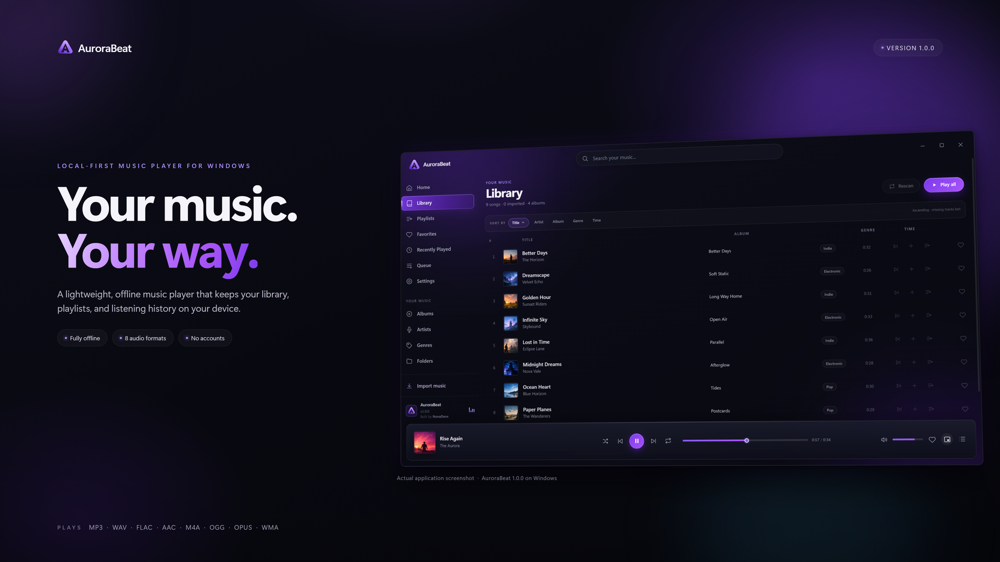

AuroraBeat
Your music, kept on your machine.
AuroraBeat scans your local folders, reads tags and artwork, and presents everything in a quiet, uncluttered library. It stays fully offline: no account, no cloud, no network calls.
Playback, playlists, favorites, and the queue are all part of the same considered interface — including a compact 460 × 188 mini player for when the music should stay out of the way.
- Library Local folders, tags, artwork, search and sort
- Formats MP3, WAV, FLAC, AAC, M4A, OGG, OPUS, WMA
- Interface Dark, light and system themes with six accents
- Release Version 1.0.0 · Installer and portable build